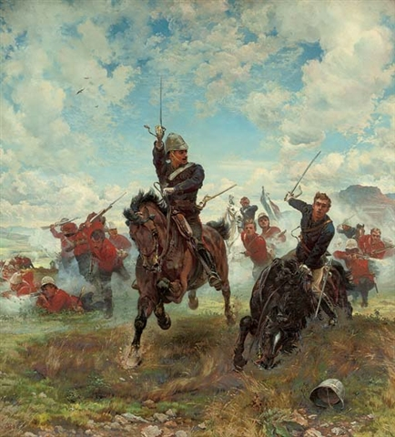

<head>
<meta charset="UTF-8" />
<meta name="keywords" content="drawing, painting" />
<meta name="description" content="drawings by Sunjy" />
<title>Sunjy</title>
<link rel="shortcut icon" type="image/x-icon" href="../../mImages/mCommon/favicon.ico" media="screen" />
<link rel="stylesheet" type="text/css" href="../../mCsses/mCommon/mCssA.css" />
<link rel="stylesheet" type="text/css" href="../../mCsses/mCommon/mCssB.css" />
<link rel="stylesheet" type="text/css" href="../../mCsses/mCommon/mCssC.css" />
<link rel="stylesheet" type="text/css" href="../../mCsses/mCommon/mCssD.css" />
<link rel="stylesheet" type="text/css" href="../../mCsses/mContent/mCssA.css" />
<link rel="stylesheet" type="text/css" href="../../mCsses/mContent/mCssB.css" />
<link rel="stylesheet" type="text/css" href="../../mCsses/mContent/mCssC.css" />
<link rel="stylesheet" type="text/css" href="../../mCsses/mContent/mCssD.css" />
</head>
<script type="text/javascript" src="../../mScripts/mContent/mContentAA.js" /></script>
<script type="text/javascript" src="../../mScripts/mContent/mContentAB.js" /></script>
<script type="text/javascript" src="../../mScripts/mContent/mContentAC.js" /></script>
<script type="text/javascript" src="../../mScripts/mContent/mContentAD.js" /></script>
<script type="text/javascript"></script> 
<script type="text/javascript">
document.write('<div class="mImgAbsolute"></div>');
/*
document.write('<p class="mFontSizeBColor" />From a white paper...</p>');
document.write('<table class="center"><tr><td>');
document.write('');
document.write('</td></tr></table>');
*/
</script>


<script type="text/javascript">
document.write('<p class="mFontSizeBColor" />Floreat Etona!</p>');
document.write('<p class="mFontSizeSColor" />Floreat Etona! by Elizabeth Thompson shows two mounted British officers in blue jackets, with swords drawn, leading red-coated infantry in a charge, and the flat-topped mountain of Majuba in Natal can be seen in the background. The horse to the right is stumbling, and the officer to the left shouts encouragement. A Queen’s Color is just visible in the background.<br><br>The scene depicts an incident in 1881, during the First Boer War, in which Lieutenant Elwes of the Grenadier Guards, shown on the left, was killed at the Battle of Laing’s Nek in 1881. Elwes was one of 84 killed. The officer Monck who’s horse stumbled, survived the battle.<br><br>The British Army was attempting to force its way through a pass in the Drakensberg Mountains in South Africa when Elwes joined a hopeless frontal assault into the guns of the Boer defense, charging up a hill on horseback. He reported encouraging his fellow Eton old boy, with a shout immediately before he was shot and killed:<br><br>“Come along, Monck! Floreat Etona!<br> We must be in the front rank!” <br><br>The title of the painting is the Latin motto of Eton College, “May Eton Flourish.” This attack was the last time a British battalion carried its colors into action.<br><br>Famous for her portrayals of battle scenes, Elizabeth Butler was a remarkable artist and one of the few 19th-century women to acquire fame for her historical paintings. However, when this painting was shown at the Royal Academy Summer Exhibition in 1882, it was not a critical success. It commemorated an unfortunate incident, and also some critics thought the painting was too sentimental.<br><br>Eton College Motto<br><br>Eton’s motto is often thought to be “Floreat Etona,” which is translated as “May Eton Flourish” or “Let Eton Flourish,” but “Esto Perpetua” (May it last forever) was also used. Neither phrase was officially a motto, but they have stuck.<br><br>Battle of Laing’s Nek<br><br>The Battle of Laing’s Nek was a significant battle fought during the First Boer War in 1881. The Boers, had about 2,000 men in the area, with at least 400 fortifying the heights around Laing’s Nek. They had little difficulty in repulsing the British Natal Field Force, commanded by General Colley, numbering around 1,216 officers and men.<br><br>The British lost 84 killed, 113 wounded, and two captured during what was perceived as a fiasco. The Boers reported their losses at 14 dead and 27 wounded. One month later, General Colley was killed at the Battle of Majuba Hill, which ended the war, after which Transvaal was recognized as an independent state.<br></p>');
document.write('<table class="center" /><tr><td>');
document.write('<br>The scene depicts an incident in 1881, during the First Boer War, in which Lieutenant Elwes of the Grenadier Guards, shown on the left, was killed at the Battle of Laing’s Nek in 1881. Elwes was one of 84 killed. The officer Monck who’s horse stumbled, survived the battle.<br><br>The British Army was attempting to force its way through a pass in the Drakensberg Mountains in South Africa when Elwes joined a hopeless frontal assault into the guns of the Boer defense, charging up a hill on horseback. He reported encouraging his fellow Eton old boy, with a shout immediately before he was shot and killed:<br><br>“Come along, Monck! Floreat Etona!<br> We must be in the front rank!” <br><br>The title of the painting is the Latin motto of Eton College, “May Eton Flourish.” This attack was the last time a British battalion carried its colors into action.<br><br>Famous for her portrayals of battle scenes, Elizabeth Butler was a remarkable artist and one of the few 19th-century women to acquire fame for her historical paintings. However, when this painting was shown at the Royal Academy Summer Exhibition in 1882, it was not a critical success. It commemorated an unfortunate incident, and also some critics thought the painting was too sentimental.<br><br>Eton College Motto<br><br>Eton’s motto is often thought to be “Floreat Etona,” which is translated as “May Eton Flourish” or “Let Eton Flourish,” but “Esto Perpetua” (May it last forever) was also used. Neither phrase was officially a motto, but they have stuck.<br><br>Battle of Laing’s Nek<br><br>The Battle of Laing’s Nek was a significant battle fought during the First Boer War in 1881. The Boers, had about 2,000 men in the area, with at least 400 fortifying the heights around Laing’s Nek. They had little difficulty in repulsing the British Natal Field Force, commanded by General Colley, numbering around 1,216 officers and men.<br><br>The British lost 84 killed, 113 wounded, and two captured during what was perceived as a fiasco. The Boers reported their losses at 14 dead and 27 wounded. One month later, General Colley was killed at the Battle of Majuba Hill, which ended the war, after which Transvaal was recognized as an independent state.<br>" />');
document.write('</td></tr></table>');
</script>


